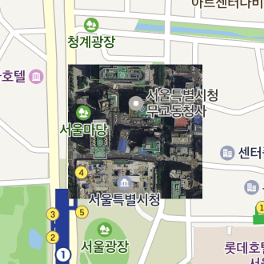
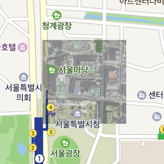

Ground Overlay
A ground overlay shows an image of a specific area on the map. Unlike markers, ground overlays are fixed to areas on the map, and they are zoomed in or out depending on the camera’s movements.
Add and remove ground overlays
An NMFGroundOverlay can be created just like a general class object. Create an object, set an area in the bounds property, an image in the overlayImage property, and a map object in the mapView property to add a ground overlay. Note that you should set the bounds and image properties before setting the mapView property; otherwise a ground overlay is not added to the map.
The following code example creates a ground overlay object and adds it to the map.
let groundOverlay = NMFGroundOverlay()
groundOverlay.bounds = NMGLatLngBounds(southWest: NMGLatLng(lat: 37.566351, lng: 126.977234),
northEast: NMGLatLng(lat: 37.568528, lng: 126.979980))
groundOverlay.overlayImage = NMFOverlayImage(name: "ground_overlay_image")
groundOverlay.mapView = mapView
Swift
let groundOverlay = NMFGroundOverlay()
groundOverlay.bounds = NMGLatLngBounds(southWest: NMGLatLng(lat: 37.566351, lng: 126.977234),
northEast: NMGLatLng(lat: 37.568528, lng: 126.979980))
groundOverlay.overlayImage = NMFOverlayImage(name: "ground_overlay_image")
groundOverlay.mapView = mapView
Objective-C
NMFGroundOverlay *groundOverlay = [NMFGroundOverlay new];
groundOverlay.bounds = NMGLatLngBoundsMake(37.566351, 126.977234, 37.568528, 126.979980);
groundOverlay.overlayImage = [NMFOverlayImage overlayImageWithName:@"ground_overlay_image"];
groundOverlay.mapView = self.mapView;
The following figure shows a ground overlay added to the map.

Set the mapView property to nil, and the ground overlay disappears from the map.
The following code example removes a ground overlay from the map.
groundOverlay.mapView = nil
Swift
groundOverlay.mapView = nil
Objective-C
groundOverlay.mapView = nil;
Bounds
The bounds property specifies the bounds of a ground overlay. This property is required; a ground overlay with no bounds specified is not added to the map.
The following code example specifies the bounds of a ground overlay.
groundOverlay.bounds = NMGLatLngBounds(southWest: NMGLatLng(lat: 37.566351, lng: 126.977234),
northEast: NMGLatLng(lat: 37.568528, lng: 126.979980))
Swift
groundOverlay.bounds = NMGLatLngBounds(southWest: NMGLatLng(lat: 37.566351, lng: 126.977234),
northEast: NMGLatLng(lat: 37.568528, lng: 126.979980))
Objective-C
groundOverlay.bounds = NMGLatLngBoundsMake(37.566351, 126.977234, 37.568528, 126.979980);
Image
The overlayImage property specifies an image for a ground overlay. This property is required; a ground overlay with no image specified is not added to the map. Before specifying an image, you should create an NMFOverlayImage object. Using the factory methods defined in the NMFOverlayImage class, you can create an instance from image assets, UIImage, and NSBundle.
The following code example specifies an image for a ground overlay.
groundOverlay.overlayImage = NMFOverlayImage(name: "ground_overlay_image")
Swift
groundOverlay.overlayImage = NMFOverlayImage(name: "ground_overlay_image")
Objective-C
groundOverlay.overlayImage = [NMFOverlayImage overlayImageWithName:@"ground_overlay_image"];
Opacity
The alpha property specifies opacity of a ground overlay. The value ranges from 0 to 1, where 0 is fully transparent and 1 is fully opaque. Even though the alpha property is 0, the subjects are still considered to be on the screen, unlike the case where the visible is false. Therefore, they can receive events.
The following code example sets a ground overlay to be semitransparent.
groundOverlay.alpha = 0.5
Swift
groundOverlay.alpha = 0.5
Objective-C
groundOverlay.alpha = 0.5f;
The following figure shows the ground overlay set to be semitransparent.
